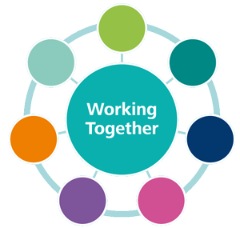
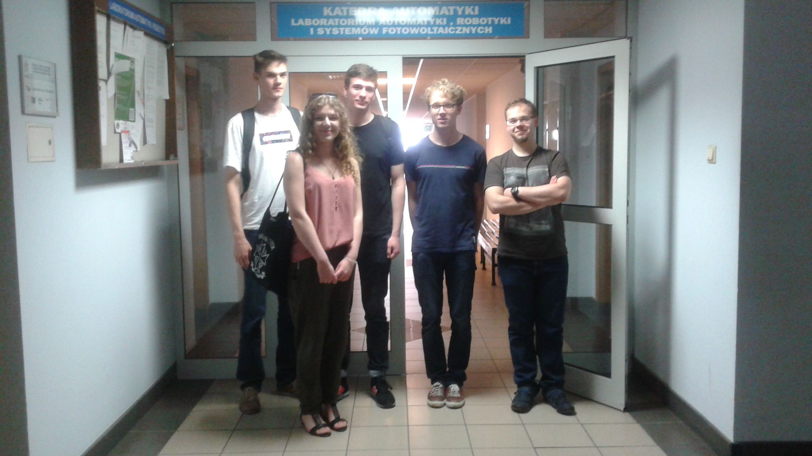

O projekcie
Ta strona powstała w ramach projektu na przedmiot Informatyczne Narzędzia Pracy Grupowej, tzw. INPG. Jego celem jest nauka działania w zespole, zgodnie z teorią scruma,
a także wykorzystywania do tego narzędzi takich jak Github czy Trello. O to efekt naszego miesięcznego sprintu, podczas którego od podstaw uczyliśmy się tworzyć
strony internetowe, codziennie robiliśmy daily scrumy i commitowaliśmy nowe i ulepszony fragmenty kodu. Właścicielem produktu jest nasz prowadzący - Panie i Panowie - Artur Pańszczyk.

Ta kilkutygodniowa praca przede wszystkim uświadomiła nam siłę współpracy i wzajemnej pomocy.
Cały projekt wymagał wiedzy z zakresu zbyt dużego do opanowania dla jednej osoby, dlatego regularnie,
tydzień w tydzień, dobieraliśmy się w mniejsze pary lub indywidualnie pracowaliśmy nad wybranymi przez siebie drobniejszymi zagadnieniami. Dzięki temu, że praca została podzielona, w dość krótkim czasie uzyskaliśmy estetyczny
i satysfakcjonujący efekt. Cały projekt obejmował zagadnienia z zakresu języków: HTML, CSS, Python, Java... A ponadto należało się zapoznać z wiedzą o SQL i tworzeniu baz danych.
Nasza Drużyna

Powyższe zdjęcie zostało wykonane w katedrze Automatyki i Robotyki AGH, 29.05.2017 roku. Mieliśmy wtedy 20 lat.
Było 26 stopni, do oddania projektu pozostawał tydzień.